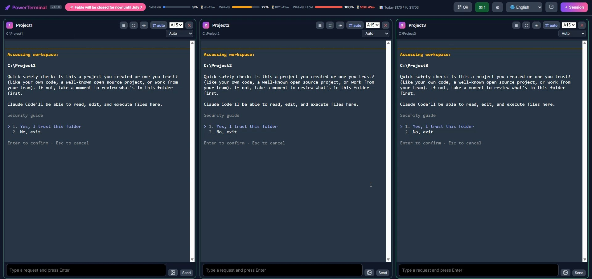
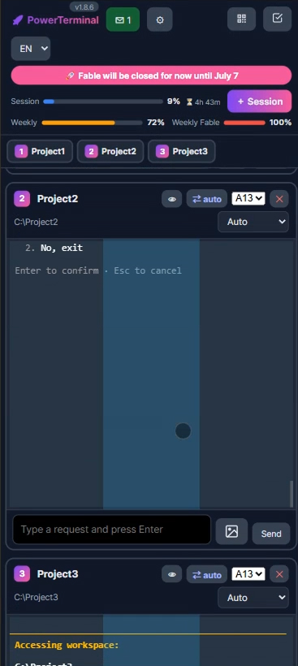
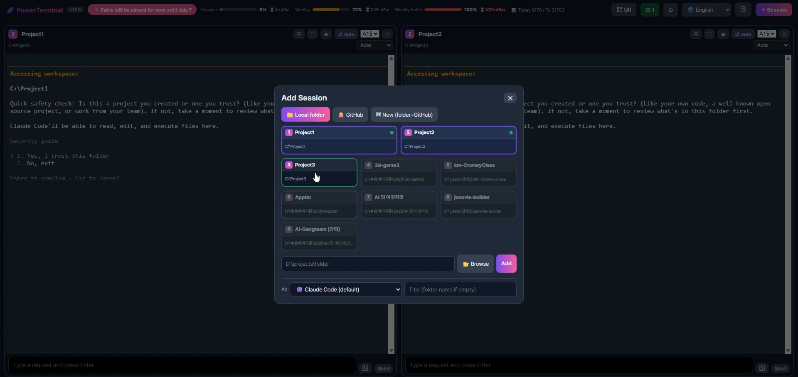
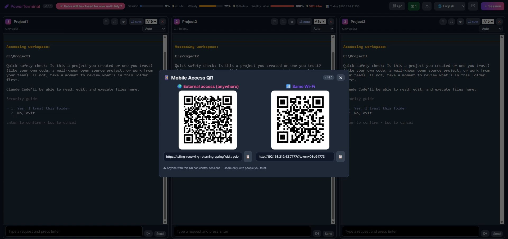

여러 AI 터미널을 한 화면에, 폰에서도
Claude Code 세션을 브라우저에서 여러 개 나란히 — PC와 폰에서 동시에. 세션은 PC에 살아있고, 어디서든 이어서 요청하세요.
폴더 찾고 터미널 켜는 반복은 그만
실제로 매일 쓰려고 만든 기능들. 열어둔 세션은 서버에 살아있어 껐다 켜도 배열 그대로 돌아옵니다.
멀티세션 그리드
여러 프로젝트를 한 화면에 나란히. 드래그로 배치, ⛶로 한 창 확대. 배열은 기억됐다가 재시작해도 복원.
폰 = PC 같은 화면
세션은 PC에 살아있고 폰은 창일 뿐. 이동 중에 진행상황 보고, 폰에서 타이핑해 요청까지.
외부 접속 QR
같은 와이파이가 아니어도 LTE로. cloudflared 터널이 자동으로 붙고, 끊겨도 스스로 재연결.
한눈에 보는 상태
작업 중이면 하늘색, 끝나면 초록 두꺼운 테두리. 새 요청을 보내기 전까진 초록으로 유지.
붙여넣기 · 모드 · 모델
이미지·긴 글은 짧은 칩으로. ⇄ 버튼으로 auto/편집승인/플랜 전환, 세션마다 모델 선택.
새 프로젝트 원클릭
폴더 + git + GitHub 비공개 레포까지 한 번에. 이전에 쓰던 폴더도 격자에서 골라 바로 시작.
Done alerts you hear
Turn on sound and each finished session is announced — a chime, then 'session two done', spoken by the browser. Offline, no app.
Touch-first on tablets
iPad and iPad mini too. Drag the center of any terminal to scroll its history; small screens drop to the phone layout.
Cross-platform, zero setup
Windows, macOS and Linux. The launcher checks for Node.js and Claude Code and offers to install whatever is missing.
See it in action




더블클릭 하나면 끝
받아서 압축 풀고 더블클릭이면 끝. 접속하신 OS 기준으로 안내해요.
start.bat 더블클릭. Claude Code가 없으면 설치할지 물어봅니다.ZIP은 즉시 받아지고, git이 설치돼 있으면 런처가 첫 실행 때 자동 업데이트까지 연결해 줍니다.
보안 — 먼저 읽어주세요
QR·접속 주소를 아는 사람은 그 컴퓨터에서 명령을 실행할 수 있습니다. 믿는 사람에게만 공유하세요. 유출됐다면 PowerTerminal을 종료하면 외부 접속이 끊기고 주소가 폐기됩니다(다음 실행 때 새 주소). 유출 책임은 본인에게 있습니다.